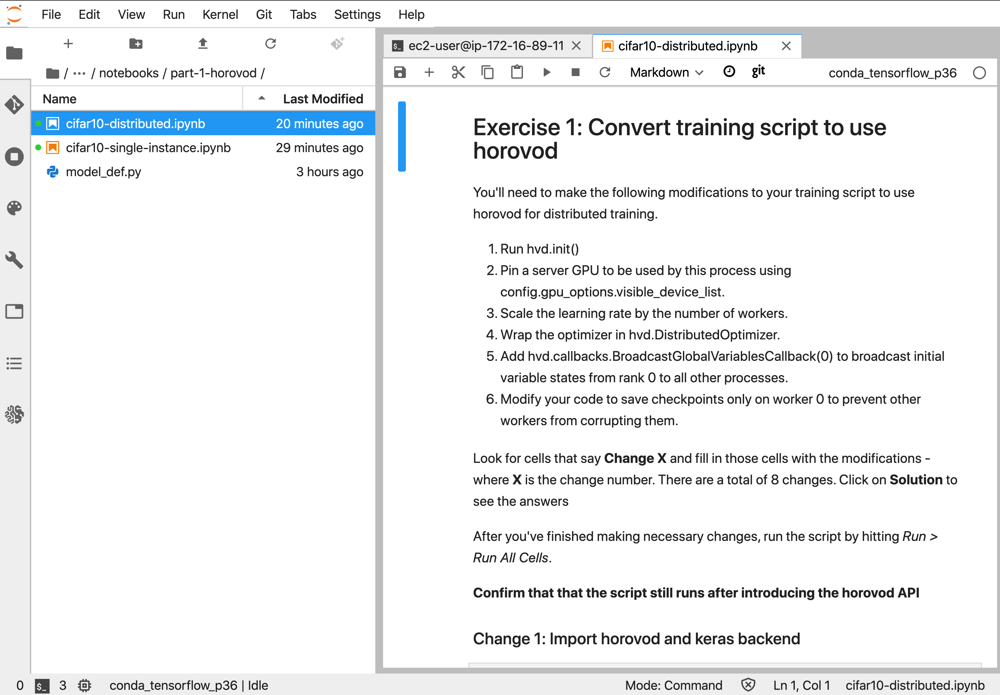

In this section you’ll update the training script with horovod API for run distributed training.
Open cifar10-distributed.ipynb and run through the cells. The following notebook is located at:
sagemaker-workshop-202006 > labs > 01. Training > 01. Distributed Training > part-1-horovod

Stop: Do this section on JupyterLab. Below is a copy of the jupyter notebook for reference.
Open cifar10-distributed.ipynb and run these cells.
Look for cells that say Change X and fill in those cells with the modifications - where X is the change number. There are a total of 8 changes.
Click on > Solution to see the answers
You’ll need to make the following modifications to your training script to use horovod for distributed training.
import tensorflow as tffrom datetime import datetime
import argparse
import os
import numpy as np
import codecs
import json
from tensorflow import keras
from tensorflow.keras.layers import Input, Dense, Flatten
from tensorflow.keras.models import Model
from tensorflow.keras.optimizers import Adam, SGD
from tensorflow.keras.callbacks import TensorBoard, ModelCheckpoint
from model_def import get_model
HEIGHT = 32
WIDTH = 32
DEPTH = 3
NUM_CLASSES = 10
NUM_TRAIN_IMAGES = 40000
NUM_VALID_IMAGES = 10000
NUM_TEST_IMAGES = 10000def train_preprocess_fn(image):
# Resize the image to add four extra pixels on each side.
image = tf.image.resize_image_with_crop_or_pad(image, HEIGHT + 8, WIDTH + 8)
# Randomly crop a [HEIGHT, WIDTH] section of the image.
image = tf.random_crop(image, [HEIGHT, WIDTH, DEPTH])
# Randomly flip the image horizontally.
image = tf.image.random_flip_left_right(image)
return imagedef make_batch(filenames, batch_size):
"""Read the images and labels from 'filenames'."""
# Repeat infinitely.
dataset = tf.data.TFRecordDataset(filenames).repeat()
# Parse records.
dataset = dataset.map(single_example_parser, num_parallel_calls=1)
# Batch it up.
dataset = dataset.batch(batch_size, drop_remainder=True)
iterator = dataset.make_one_shot_iterator()
image_batch, label_batch = iterator.get_next()
return image_batch, label_batchdef single_example_parser(serialized_example):
"""Parses a single tf.Example into image and label tensors."""
# Dimensions of the images in the CIFAR-10 dataset.
# See http://www.cs.toronto.edu/~kriz/cifar.html for a description of the
# input format.
features = tf.parse_single_example(
serialized_example,
features={
'image': tf.FixedLenFeature([], tf.string),
'label': tf.FixedLenFeature([], tf.int64),
})
image = tf.decode_raw(features['image'], tf.uint8)
image.set_shape([DEPTH * HEIGHT * WIDTH])
# Reshape from [depth * height * width] to [depth, height, width].
image = tf.cast(
tf.transpose(tf.reshape(image, [DEPTH, HEIGHT, WIDTH]), [1, 2, 0]),
tf.float32)
label = tf.cast(features['label'], tf.int32)
image = train_preprocess_fn(image)
label = tf.one_hot(label, NUM_CLASSES)
return image, label# Hyper-parameters
epochs = 1
lr = 0.01
batch_size = 128
momentum = 0.9
weight_decay = 2e-4
optimizer = 'sgd'
gpu_count = 1
# Data directories and other options
checkpoint_dir = '../ckpt_dir'
if not os.path.exists(checkpoint_dir):
os.makedirs(checkpoint_dir)
train_dir = '../data/train'
validation_dir = '../data/validation'
eval_dir = '../data/eval'
train_dataset = make_batch(train_dir+'/train.tfrecords', batch_size)
val_dataset = make_batch(validation_dir+'/validation.tfrecords', batch_size)
eval_dataset = make_batch(eval_dir+'/eval.tfrecords', batch_size)model = get_model(lr, weight_decay, optimizer, momentum)opt = SGD(lr=lr, decay=weight_decay, momentum=momentum)model.compile(loss='categorical_crossentropy',
optimizer=opt,
metrics=['accuracy'])%%time
# Train model
history = model.fit(x=train_dataset[0], y=train_dataset[1],
steps_per_epoch=NUM_TRAIN_IMAGES // batch_size,
validation_data=val_dataset,
validation_steps=NUM_VALID_IMAGES // batch_size,
epochs=epochs,
callbacks=[ModelCheckpoint(checkpoint_dir + '/checkpoint-{epoch}.h5')])# Evaluate model performance
score = model.evaluate(eval_dataset[0],
eval_dataset[1],
steps=NUM_TEST_IMAGES // batch_size,
verbose=0)
print('Test loss :', score[0])
print('Test accuracy:', score[1])Note once these changes are made, you can convert the jupyter notebook into a python training script by running:
$ jupyter nbconvert notebook.ipynb --to script.